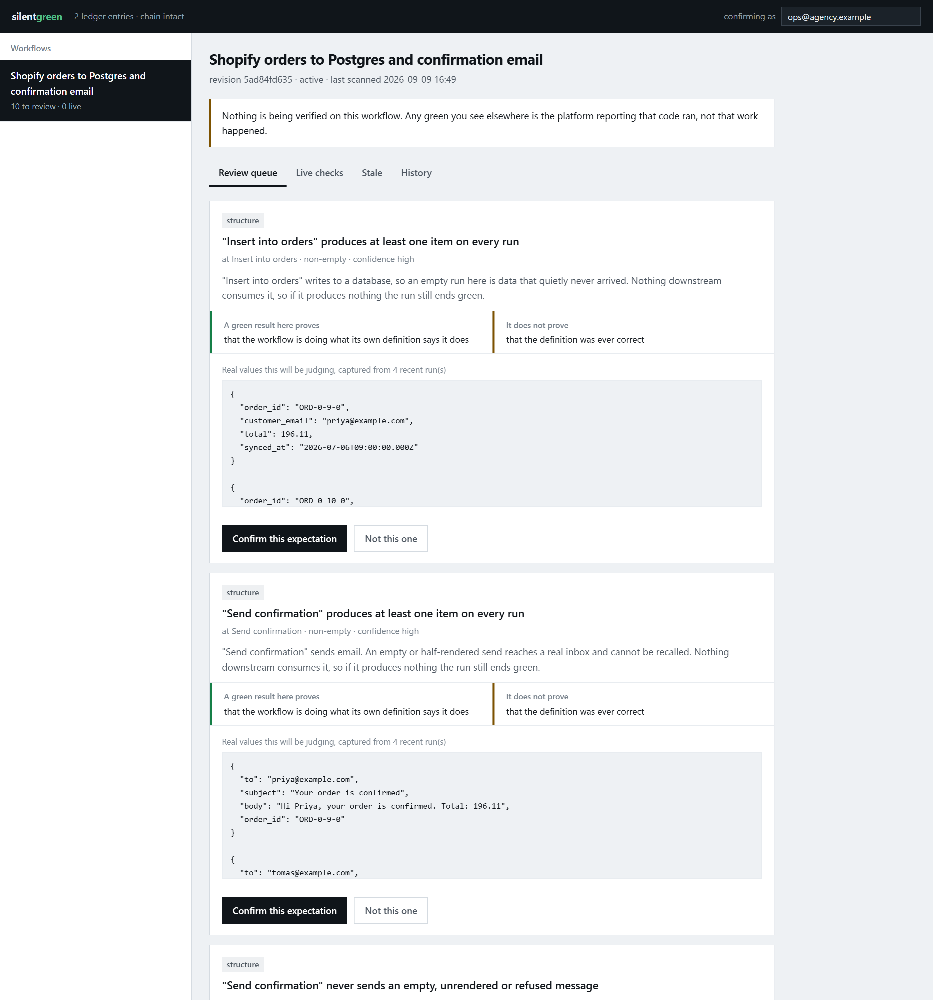

Your automation platform can tell you that the code ran. It cannot tell you that the work happened. Below are six weeks of real executions from an order sync. The platform recorded every single one as a success.
What a customer received, every hour, for three weeks:
Most tools report two states, and the second one is a lie of omission: a check that never ran and a check that succeeded look identical. This reports three, and the middle one is the whole point.
Counts from the six weeks above. Every violation quotes the literal captured value that decided it.
One upstream field was renamed. Rows kept being written, emails kept being sent, and the volume never changed, so a baseline monitor watching for anomalies saw nothing at all.
This is the question no monitoring tool asks, and it decides what a green tick is worth. An expectation learned from a system's own output cannot show the system was ever right. It can only show it has not changed.
Before an expectation drawn from past behaviour can turn anything green, somebody has to say which period they believe was correct, and how they know. If they will not say it, the check stays unconfirmed and reports as unproven, which is the honest answer.
how do you know that window was good? > "looks fine"
A review queue that runs locally against a store on your own disk. It shows you the real captured values an expectation will be judging before you take responsibility for it, and states plainly what a green result there will and will not prove.

The attestation box is validated by the same function the gate uses rather than a copy of its rules in the browser, so the interface cannot promise something the gate will refuse. Confirmations, refusals and retirements all enter the evidence log with the name of the person who made them.
Somebody adds a retry to one node. Every expectation was confirmed against the previous revision, so none of them describes what runs now. Here are the same contracts against the same executions, one revision later.
Nothing turned green and nothing kept accusing. A workflow rename or a node moved on the canvas changes nothing, because the revision hash is computed on meaning rather than on the document. Rewiring a connection, changing a request target or disabling a node invalidates every check bound to it.
Read-only. There is no code path in this tool that writes to, activates or deletes anything on your platform. The worked example above needs no credentials at all.
# the worked example, printed. No account, no key. npx github:harsh01369/silentgreen demo # load that example into a local store and review it npx github:harsh01369/silentgreen seed npx github:harsh01369/silentgreen review # or your own n8n, with a read-only API key export N8N_URL=https://your-n8n.example export N8N_API_KEY=n8n_api_... npx github:harsh01369/silentgreen scan npx github:harsh01369/silentgreen review npx github:harsh01369/silentgreen verify # exits 1 on a violation, so it fits a cron job npx github:harsh01369/silentgreen watch # or keep it running, and alert on change npx github:harsh01369/silentgreen report --out record.html
scan proposes expectations and explains where each one came from.
Nothing it proposes can raise anything until you confirm it in
review. State lives in a
.silentgreen/ directory of plain
JSON you can read, diff and delete.
An earlier version of this page advertised two monthly plans. Every feature they promised now ships in the free tool, and the hosted service they implied was not built. Charging for it would have been the exact thing this product argues against, so here is the honest version instead.
watch, so absence detection has a clockThis is the whole product. It runs on any box you already have.
There is no signup button here because there is nothing to sign up to. If you want this, say so on the GitHub issue and I will know it is worth building.
A service, available now, because it needs no infrastructure that does not already exist.